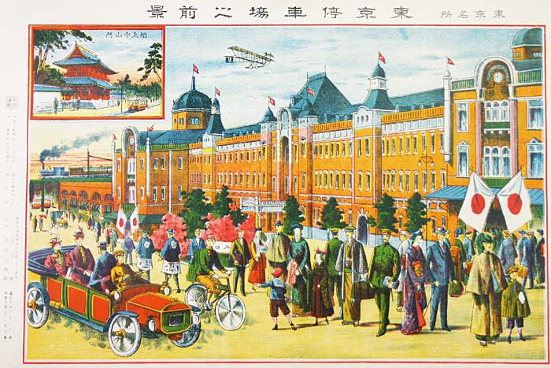
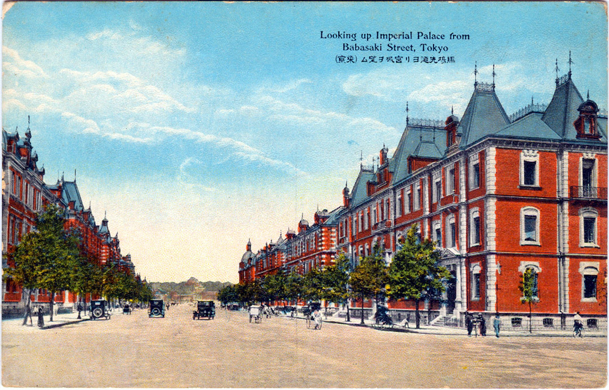
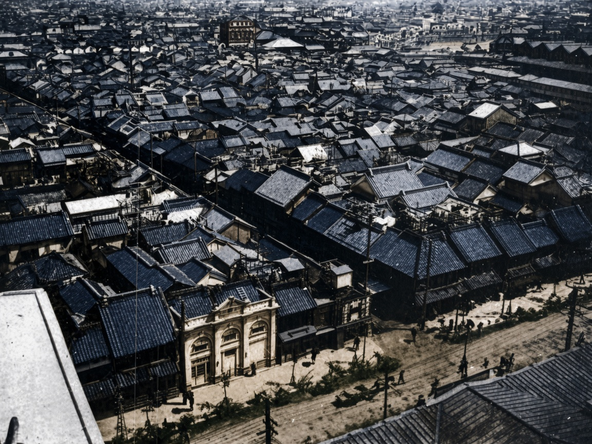
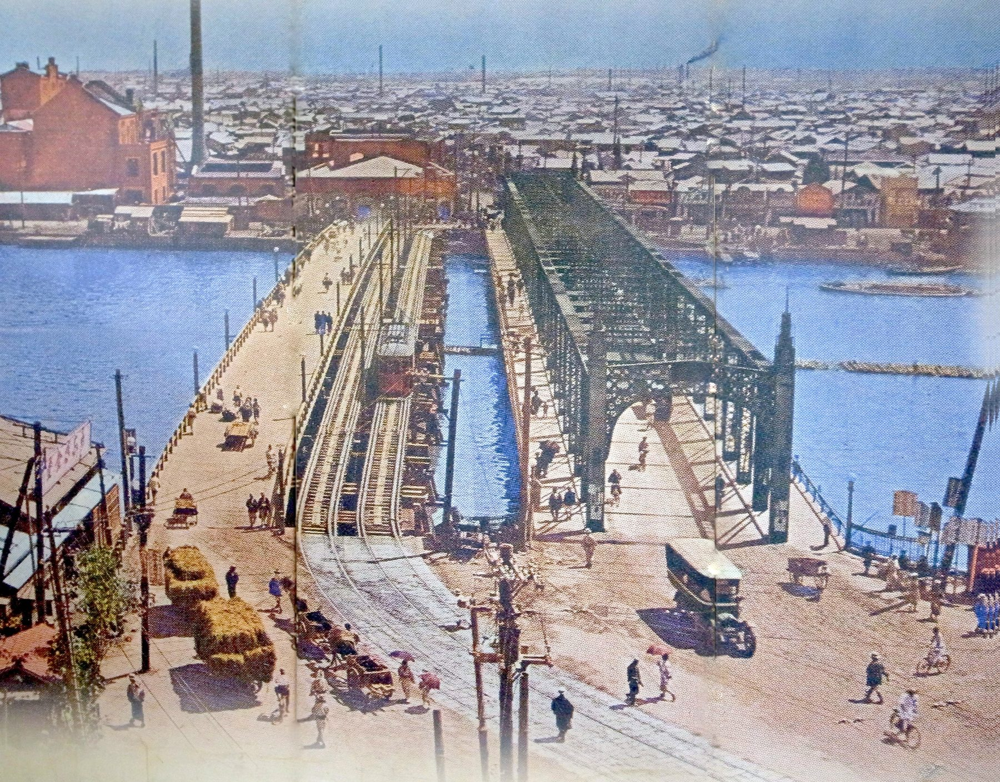
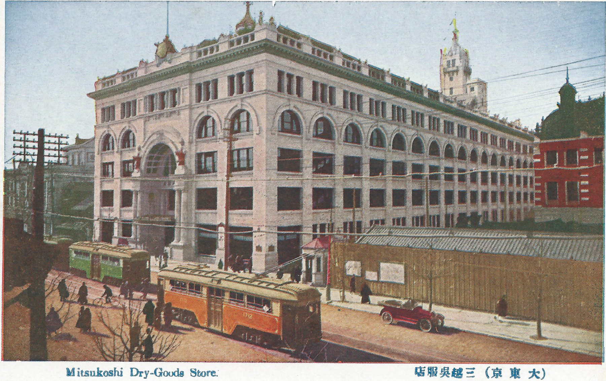
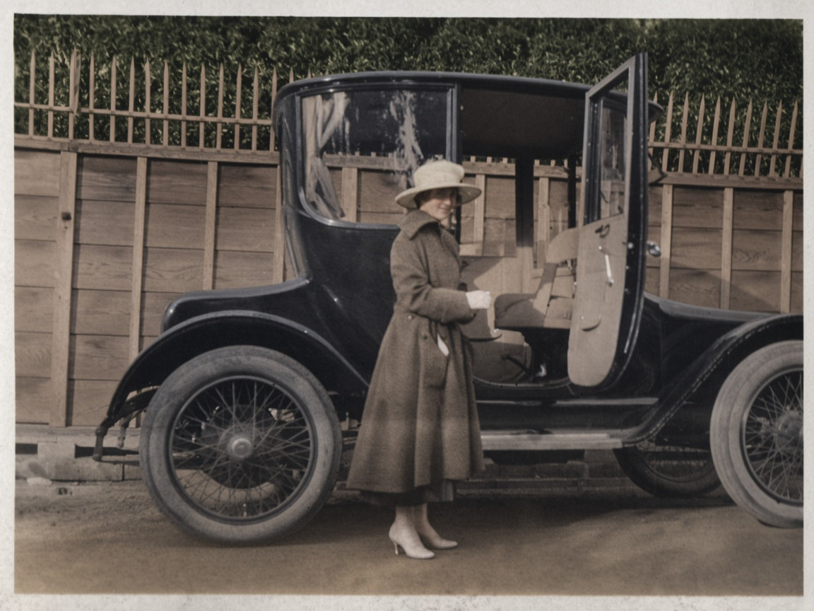
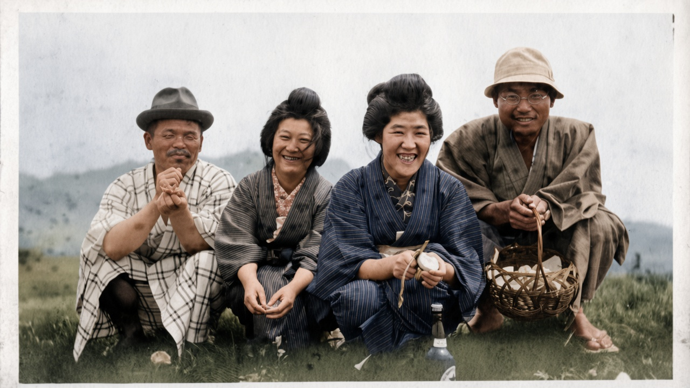
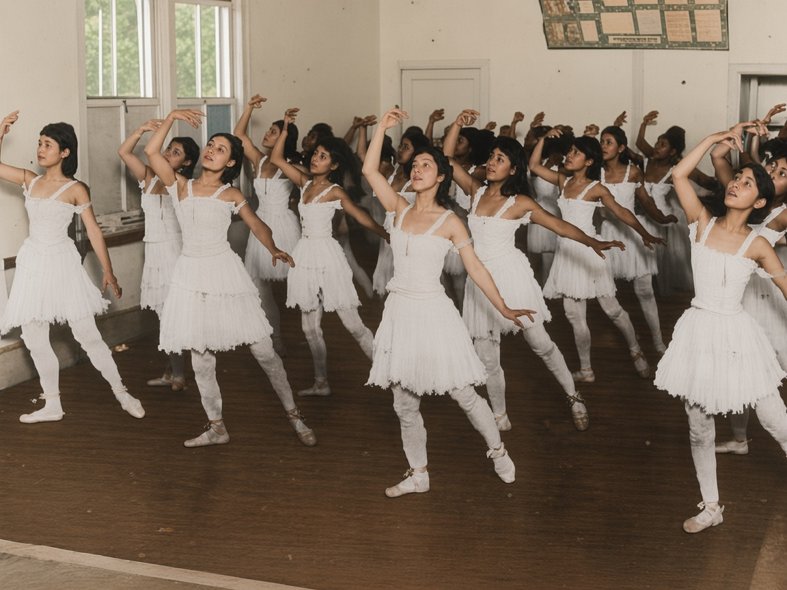
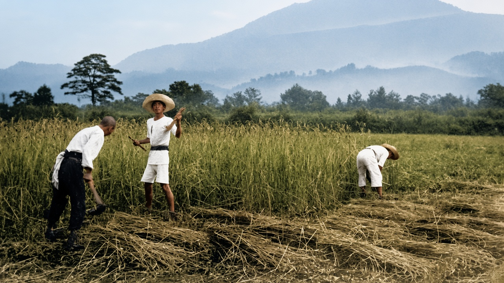
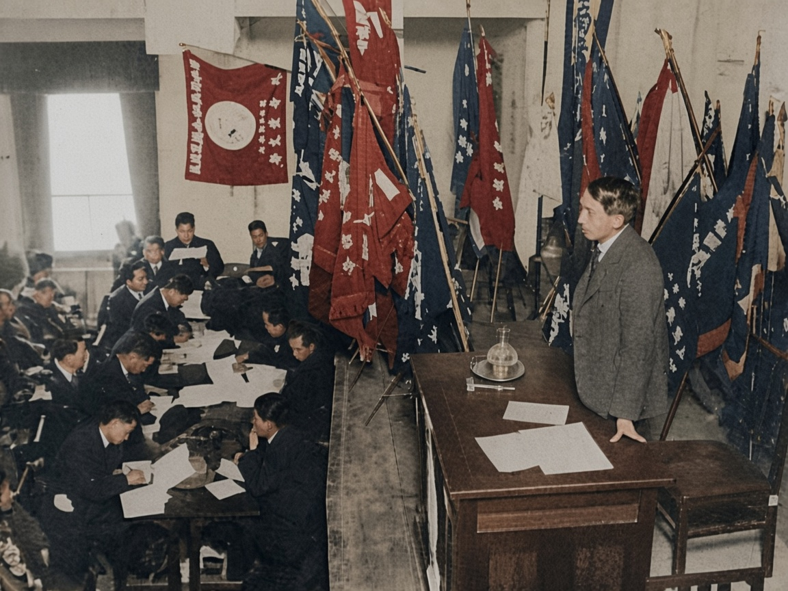

01 · 1910 年代 · 东京
东京停车场之前景

这不是照片，是一张名所绘叶书。红砖站房、穹顶、钟楼和站前的敞篷汽车、自行车、和服与洋服挤在同一张画面里。左上角另嵌一幅寺院与电车的小图，天上一架飞机。
东京站 1914 年启用，设计者辰野金吾。站前马场先通因这一排红砖楼，被称为「一丁伦敦」，下一张就是那条街的实景明信片。1923 年关东大地震后，穹顶被烧，重建时改成了今天看到的样子。
大正 · 绘叶书与写真
1912 年到 1926 年，砖楼、电车、百货公司和田里的新村叠在同一代人身上。这一辑十张，四张原件已是着色绘叶书，六张黑白照片另附着色。
着色按原片上色，供对照着看。衣色、肤色、旗帜颜色都是推定。原片可在每张下面切回。宝冢那张原片很小，着色后面孔会比底片清楚，不能当成当时的彩色照片。

01 · 1910 年代 · 东京

这不是照片，是一张名所绘叶书。红砖站房、穹顶、钟楼和站前的敞篷汽车、自行车、和服与洋服挤在同一张画面里。左上角另嵌一幅寺院与电车的小图，天上一架飞机。
东京站 1914 年启用，设计者辰野金吾。站前马场先通因这一排红砖楼，被称为「一丁伦敦」，下一张就是那条街的实景明信片。1923 年关东大地震后，穹顶被烧，重建时改成了今天看到的样子。
02 · 约 1920 年 · 东京丸之内
马路正中几乎空着，两侧是同一套红砖、白石线脚和尖顶。右侧楼群是三菱在丸之内盖的办公街。电车、汽车和马车混在车道上，行人贴着人行道。
这条街的绰号是「一丁伦敦」：一个街区的红砖楼，看起来像把伦敦截下一段。明信片把砖楼染成统一的红，是绘叶书工房的套色，不是测色记录。路尽头的树是皇居。
03 · 地震前 · 东京日本桥

从高处看下去，灰瓦几乎铺满画面。近处一栋带拱门和三角山墙的西式门面，贴着一片木造店屋。右下方是电车轨道和零星行人。
这是关东大地震以前的日本桥街巷。1923 年 9 月 1 日的火把这一带的瓦屋顶烧掉了大半。着色把屋顶处理成青灰瓦、墙作旧木色，只是为了把层次分开。
04 · 大正 · 东京浅草

隅田川上并着两座桥：一座铺着电车轨道的旧桥，一座深色钢桁架新桥。桥头是人力车、货车和戴伞的行人，对岸屋顶一直铺到烟囱底下。
吾妻桥连接两国与浅草。钢桥和木桥同时在用，是大正东京常见的叠层：新的交通叠在旧的渡口上。着色是绘叶书原有的，河水被染得很蓝。
05 · 大正 · 东京日本桥

转角一座白石大楼，底层拱廊，楼上成排圆拱窗，屋脊有雕饰。楼前两辆电车，一绿一橙，路边一辆红色敞篷汽车。右侧红砖楼只露出一角。
三越从吴服店改成百货公司，是明治末到大正城市消费的标志。这张明信片把电车涂上路线色，是印制时的套色，不是车辆档案。
06 · 1914 年 · Elstner Hilton 摄

一辆深色箱型汽车停在木板墙前，后座门向外开着。女子穿长大衣、宽檐帽、浅色高跟鞋，一手扶在门内。墙头是一排尖桩，桩外是树篱。
拍摄者 Elstner Hilton，这组照片在维基共享里标为大正。大衣和车身在原片里都是深灰，着色把车留成近黑、大衣做成灰褐。人脸经过上色会略偏离底片。
07 · 1915 年 6 月 · Elstner Hilton 摄

四人蹲在草坡上。左起：礼帽和格子羽织的男子，高岛田发髻的女子，条纹和服、手里捏着小杯的女子，戴软盔帽和眼镜、提着藤篮的男子。脚边一只玻璃瓶。
和服、礼帽、眼镜和汽水瓶放在同一张野餐里。条纹和格子的颜色原片没有，着色是推定。白边保留着底片的样子。
08 · 1919 年 · 宝冢音乐学校

教室里几排学生穿白色芭蕾短裙和软鞋，手臂抬在同一高度。左边是高窗，后墙有一块告示板，地板是深色的。
宝冢歌剧团 1914 年成立，女学生演男角，是大正大众文化的一条线。原片又小又糊，着色把舞裙和面孔补清楚了，人数和手势跟底片大体对应，单张脸不能拿去认人。
09 · 1919 年 · 宫崎新村

麦田里三个人。左边弯腰收割，白衫黑裤；中间站着，斗笠，一手举起；右边也弯着腰。前景是割倒的麦束，左侧一棵松，后面是淡下去的山。
「新村」是武者小路实笃 1918 年在宫崎日向开办的理想主义共同体，和白桦派同一时期。着色把麦子做成枯黄、山做成蓝灰，是按季节推定的。
10 · 约 1922 年 · 日本农民组合

一间大厅。左侧长桌坐满穿暗色洋服的男子，桌上铺着纸。右侧一人站在讲桌边。背后竖着几十面旗，靠窗一面旗上有圆徽。
日本农民组合 1922 年由贺川丰彦、杉山元治郎等人发起，会场一般系于创立前后。原片颗粒很粗，着色把旗分成红、蓝两色，只为把旗杆从人群里分开，不是会旗的实物色谱。